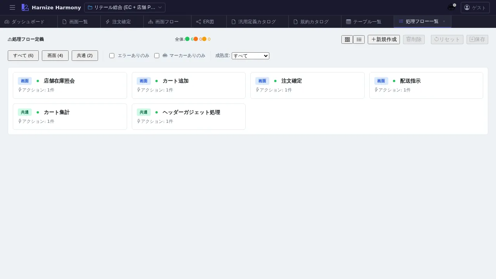

処理フロー一覧
対象画面:
ProcessFlowListView(frontend/src/components/process-flow/ProcessFlowListView.tsx) ルート:/w/:wsId/process-flow/list種別: シングルトンタブ
概要
プロジェクトの全処理フロー (ProcessFlow リソース) を一覧する。本プロジェクトの 一次成果物 (JSON Schema) にあたる処理フローを俯瞰でき、各フローの成熟度 / Step 数 / 検証警告件数 などをカード or 表で確認。/create-flow / /review-flow / /generate-code / /generate-tests スキルへの起点となる中央 hub 的画面。
到達経路
- HeaderMenu → 「処理フロー」 → 「一覧」
- ダッシュボード「処理フロー成熟度」パネル → 「一覧へ」
- 直接 URL:
/w/<wsId>/process-flow/list
画面構成

主要エリア
- ヘッダー — タイトル「処理フロー一覧」 + 件数 + 「処理フローを追加」
- フィルタ — 名前 / namespace / kind (entrypoint / sub / handler) で絞込み
- ソート — 名前 / 成熟度 / Step 数 / 更新日時
- 一覧 — 各カード/行に成熟度バッジ + 警告件数バッジ + draft マーク (●)
主要操作
| 操作 | 手段 | 結果 |
|---|---|---|
| 新規作成 | 「処理フローを追加」 | ProcessFlowEditor (/process-flow/edit/<新規>) が新タブで開く |
| AI 作成 | (上記後) /create-flow <flowId> <業務概要> skill を呼ぶ | AI が品質ガード付きで初期 JSON を生成 |
| フロー編集 | カード / 行クリック | /process-flow/edit/:id 新タブ |
| AI レビュー | 右クリック → 「レビュー…」 | /review-flow <flowId> skill のヒント表示 |
| 削除 | 右クリック → 「削除」 / Delete | 参照ありの場合は警告 |
| rename | 右クリック → 「ID 変更…」 / F2 | RenameEntityDialog |
| 並び替え | カード / 行ドラッグ | renumber 後保存 |
データ前提
- 空状態: 「処理フローが未登録です」+
/create-flowskill 案内 - 意味のある状態: retail で
cart-add/order-confirm/shipment-dispatch等 7 フロー - draft 中マーク (●) :
data/.drafts/<wsId>/process-flow/<id>.json検知時
関連仕様書
docs/spec/list-common.mddocs/spec/process-flow-workflow.md— フロー設計の業務手順docs/spec/process-flow-maturity.md— 成熟度バッジ判定
関連 skill
/create-flow <flowId> <業務概要> [namespace]— 新規作成/review-flow <flowId>— 10 観点専門レビュー/generate-code <flowId>//generate-tests <flowId>— code / test 生成
既知の制約・注意
- フロー一覧から 直接 trigger 構造を可視化はしない (Step 詳細は Editor で確認)
- 成熟度フィルタを活用して draft フローと committed フローを切り分けると review しやすい